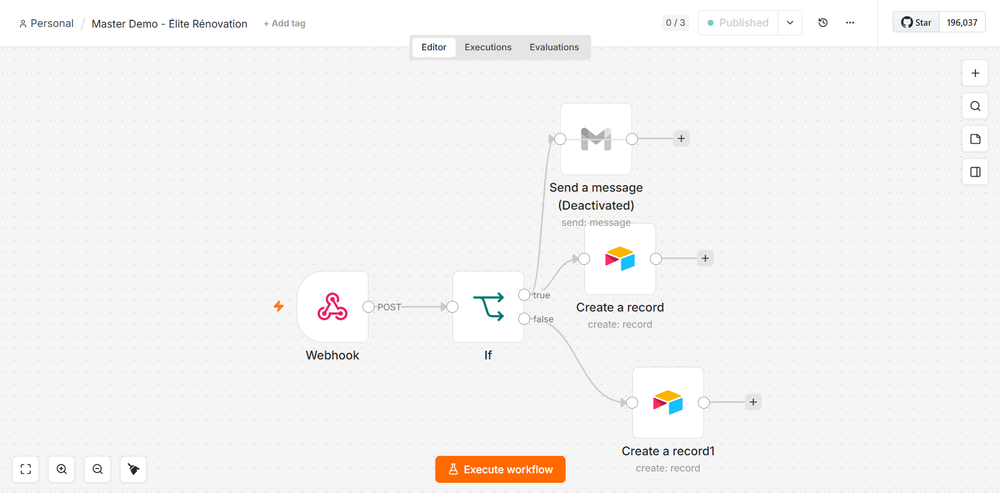
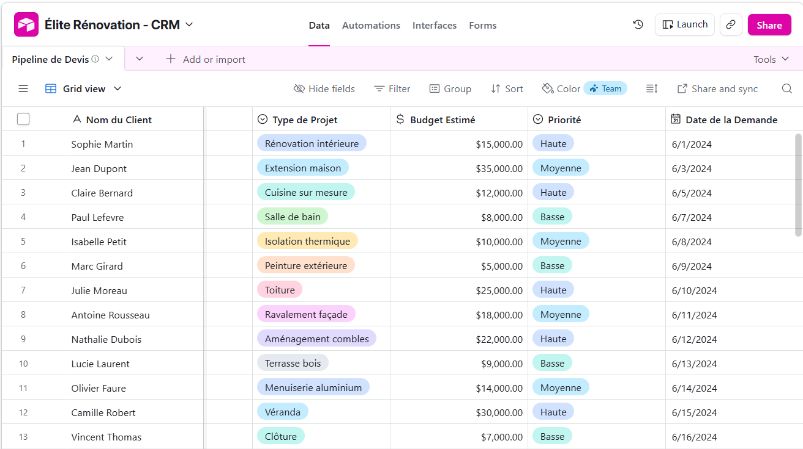
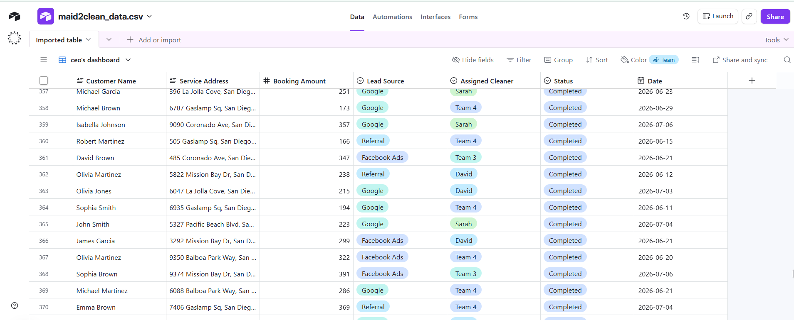
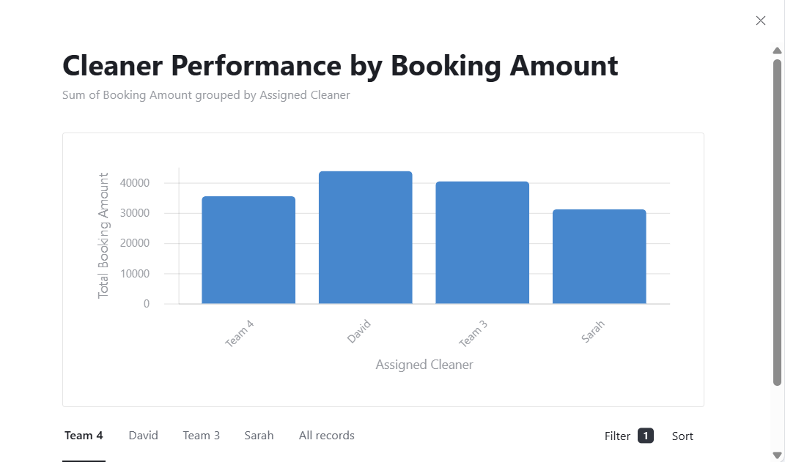
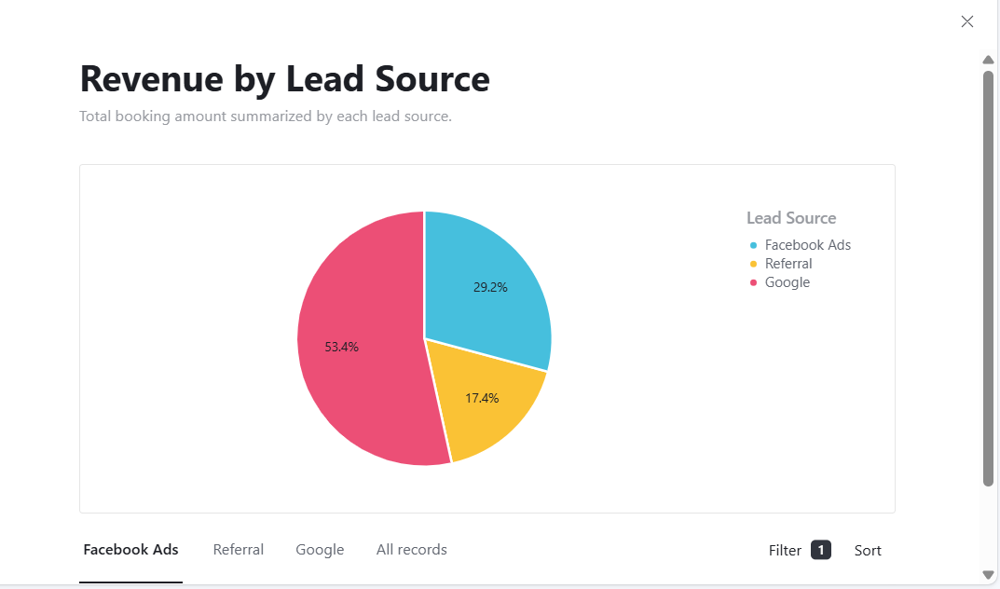
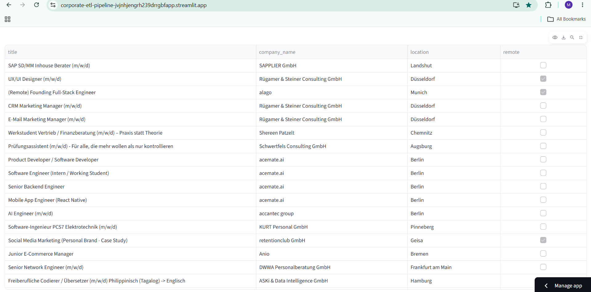

We automate lead pipelines so you stop losing customers to manual admin.
FlowArchitect builds automated operating systems for high-growth service businesses — from first click to booked appointment, with nothing falling through the cracks.
Your leads aren't lost. They're just sitting.
You're paying for ads, referrals, and a website that brings people in the door — and then the trail goes cold. A form gets submitted at 9pm and nobody follows up until Tuesday. A lead wants to book but has to wait for a callback.
That's not a sales problem. That's a systems problem — and it's costing you real revenue every week.
Built for real businesses. Already running.
// lead_router.js if (lead.value > 15000) { route → "VIP_QUEUE" notify → manager } else { route → "STANDARD_QUEUE" }
Élite Rénovation Paris — VIP Quote Dashboard
A conditional logic engine parses every inbound web lead the moment it arrives, automatically separating high-ticket VIP projects (over €15,000) from standard requests, and pushing the results straight into the manager's CRM dashboard — no manual sorting required.
// dispatch_webhook.log POST /webhook/booking 200 OK payload.received ✓ sync → ops_dashboard manual_entry → none
Maid 2 Clean SD — Real-Time Dispatch Backend
A live webhook infrastructure catches every external booking payload the instant it's submitted and populates a synchronized operations command center in real time — eliminating manual data entry entirely.
# etl_pipeline.py on: github.actions.schedule → extract(job_market_data) → transform(pandas) → load → "streamlit_app"
Corporate Market Intel — Automated ETL Pipeline
A custom Python pipeline, triggered on a schedule by GitHub Actions, automatically extracts job market data, transforms it, and loads it into a live Streamlit web application — giving the team an always-current view for competitor analysis.
A closer look inside each system.
Élite Rénovation Paris — Dashboard de Devis VIP


Maid 2 Clean SD — Real-Time Dispatch Backend



Corporate Market Intel — Automated ETL Pipeline

See exactly where you're losing leads.
In 15 minutes, we'll map your current lead flow — from ad click to closed customer — and show you precisely where the gaps are, and what it would take to close them.
Book a 15-Minute Systems Audit